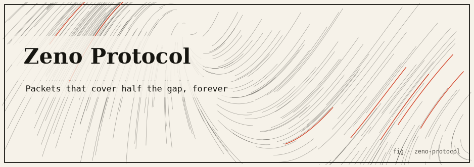

zeno-protocol
Delivers a message by moving half the remaining distance every tick — transport built on Zeno’s dichotomy paradox. The series sums to 1; the message always arrives in finite time.

The idea
Zeno’s dichotomy paradox says: to reach a destination, you must first reach the halfway point; but before that, the quarter point; and so on forever — so motion is impossible. The resolution: the infinite series 1/2 + 1/4 + 1/8 + … sums to exactly 1. The message arrives in finite time.
This package implements that literally as a message-transport protocol: each tick, the packet moves exactly half the remaining distance. The packet never reaches the destination algebraically, but a convergence threshold ε determines when the delivery is “close enough” to declare arrival. The total number of ticks is log&sub2;(1/ε).
The mathematics
Position after n ticks: P_n = 1 - (1/2)^n Sum of steps: Σ (1/2)^k for k=1..∞ = 1 Ticks to reach ε-tolerance: n = ⌈log₂(1/ε)⌉ ε = 1e-9 → n = 30 ticks ε = 1e-6 → n = 20 ticks
Run it
git clone https://github.com/caelum0x/awesome-mad-projects.git cd zeno-protocol go test ./... go run . # Tick 1: position 0.500000 (moved 0.500000) # Tick 2: position 0.750000 (moved 0.250000) # Tick 3: position 0.875000 (moved 0.125000) # ... # Tick 30: position 0.999999999 (delivered ✓)